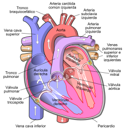

| Características del Corazón | |
• El corazón es como del tamaño de un puño. Está compuesto de tejido muscular y bombea sangre a todo el cuerpo. Entre las estructuras externas del corazón se encuentran los ventrículos, las aurículas, las arterias y las venas. Las arterias transportan la sangre desde el corazón mientras que las venas llevan la sangre al corazón. |
 |